LEMBAGA SERTIFIKASI PROFESI (LSP) MITRA MANDIRI INFORMATIKA
BADAN NASIONAL SERTIFIKASI PROFESI (BNSP)
Disusun untuk Memenuhi Persyaratan Uji Sertifikasi Kompetensi (USK)
Skema Sertifikasi: Pengembang Web Pratama (Junior Web Developer)
Nomor Skema: 020403
| Nama Peserta (Asesi) | : Magfi Adi Radza Putra |
| Skema Sertifikasi | : Pengembang Web Pratama |
| Nomor Skema | : 020403 |
| Nama Asesor Penguji | : Wiwit Rodiyati |
| Tempat Uji Kompetensi (TUK) | : Sewaktu / Tempat Kerja / Mandiri |
| Repository GitHub | : https://github.com/Heikkakeren/bookstore |
| Rancangan Mockup UI | : [Tempel Tautan Figma / Canva Anda] |
JAKARTA
TAHUN 2026
Laporan Tugas Praktik Demonstrasi pengembangan aplikasi BookStore ini telah diperiksa, diuji, dan dinyatakan memenuhi seluruh Standar Kriteria Unjuk Kerja (KUK) pada Skema Sertifikasi Pengembang Web Pratama (Junior Web Developer).
| Tanggal Pengujian | : ................................................................. 2026 |
| Nama Asesi (Peserta) | : Magfi Adi Radza Putra |
| Nama Asesor Penguji | : Wiwit Rodiyati |
| Keputusan Penilaian | : [ ] KOMPETEN (K) [ ] BELUM KOMPETEN (BK) |
|
Tanda Tangan Asesi (Peserta), ( Magfi Adi Radza Putra ) |
Tanda Tangan Asesor Penguji, ( Wiwit Rodiyati ) |
Puji dan syukur penulis panjatkan kehadirat Tuhan Yang Maha Esa atas rahmat dan karunia-Nya, sehingga Laporan Tugas Praktik Demonstrasi (FR.IA.02) dengan judul "Pengembangan Aplikasi E-Commerce BookStore Berbasis Web dengan Framework Laravel 11" ini dapat diselesaikan dengan baik dan tepat waktu.
Laporan ini disusun sebagai bukti otentik unjuk kerja dalam rangka Uji Sertifikasi Kompetensi (USK) Skema Pengembang Web Pratama (Junior Web Developer) No. 020403 pada Lembaga Sertifikasi Profesi (LSP) berlisensi BNSP. Melalui proyek ini, seluruh unit kompetensi—mulai dari perancangan user interface, penerapan sintaks bahasa pemrograman, pengorganisasian file MVC yang rapi, penulisan kode sesuai best practices dengan komentar/DocBlocks, hingga pengujian otomatis—telah diimplementasikan secara komprehensif.
Penulis mengucapkan terima kasih yang sebesar-besarnya kepada Asesor Penguji Ibu Wiwit Rodiyati, instruktur, dan LSP LSPMI atas bimbingan dan kesempatan yang diberikan.
Jakarta, November 2026
Magfi Adi Radza Putra
Perkembangan teknologi informasi dan internet telah mengubah kebiasaan masyarakat dalam memperoleh bahan bacaan dan literatur. Platform e-commerce kini menjadi sarana utama bagi masyarakat untuk mencari, memilih, dan membeli buku secara cepat tanpa terkendala batasan geografis. Pengelolaan toko buku daring membutuhkan sistem informasi yang handal, terstruktur, aman, serta memiliki alur manajemen inventaris yang akurat antara data buku dan stok fisik.
Dalam skema sertifikasi Pengembang Web Pratama (Junior Web Developer) No. 020403, asesi diwajibkan untuk membangun aplikasi BookStore yang melayani 2 aktor utama, yaitu Administrator (pengendali katalog, inventaris stok, data pelanggan, dan pesanan) serta User/Pelanggan (pencarian buku, keranjang belanja, dan pembayaran sebelum pengiriman).
| Artefak | Tautan Resmi (URL) |
|---|---|
| Source Code GitHub | https://github.com/Heikkakeren/bookstore |
| Mockup UI (Figma/Canva) | [Tempelkan tautan Figma atau Canva Anda di sini] |
| Portal Pengumpulan LSP | https://lspmi.co.id |
Sistem BookStore membagi hak akses ke dalam 2 aktor:
Arsitektur MVC memisahkan logika aplikasi ke dalam 3 lapisan: Model (Eloquent ORM), View (Blade Template), dan Controller (Logika Bisnis).
Pemisahan tabel books dan stocks (relasi 1:1) memisahkan data statis buku dari data kuantitas stok yang dinamis, mencegah locking tabel, serta didukung transaksi atomik DB::transaction().
| No | Fitur Administrator | File Controller & Rute | Keterangan Implementasi |
|---|---|---|---|
| 1 | CRUD Kategori Buku | CategoryController.php/admin/categories |
Tambah, edit, dan hapus kategori buku. Dilindungi proteksi relasi jika kategori masih memiliki buku. |
| 2 | CRUD Data Buku & Stok | BookController.php/admin/books |
Tambah data buku, upload cover gambar publik, dan kuantitas stok menggunakan DB::transaction(). |
| 3 | List User Terdaftar | UserManagementController.php/admin/users |
Menampilkan daftar seluruh user/pelanggan terdaftar secara terpaginasi (15 per halaman). |
| 4 | List Pesanan Multi-User | OrderManagementController.php/admin/orders |
Menampilkan riwayat pesanan dari berbagai user dan pembaruan status pemrosesan pesanan. |
| No | Fitur User | File Controller & Rute | Keterangan Implementasi |
|---|---|---|---|
| 1 | Registrasi User | AuthController.php/register |
Formulir pendaftaran akun baru dengan validasi nama, email unik, dan password Bcrypt minimal 8 karakter. |
| 2 | Login User | AuthController.php/login |
Autentikasi sesi email & password dengan pengalihan otomatis ke katalog belanja. |
| 3 | Detail About Us | AboutController.php/about |
Menampilkan profil toko buku, visi literasi, jam operasional, dan nilai layanan. |
| 4 | Contact to Admin | ContactController.php/contact |
Pengguna mengirim pesan pertanyaan/aduan ke admin yang tersimpan di basis data. |
| 5 | Pencarian Buku | CatalogController.php/katalog?search=... |
Pencarian cepat berdasarkan judul, penulis, atau penerbit dipadukan dengan filter kategori. |
| 6 | Add to Cart Buku | CartController.php/cart |
Menambahkan buku ke keranjang dengan validasi stok ketat (mencegah pembelian melebihi stok). |
| 7 | Payment at Delivery | CheckoutController.php/checkout |
Pembayaran buku sebelum buku dikirim (pilihan QRIS, GoPay, Transfer Bank). Stok terpotong otomatis di tabel stocks. |
Berikut adalah 16 tangkapan layar antarmuka pengguna aplikasi BookStore yang telah diambil langsung dari sistem dan disematkan secara otomatis:
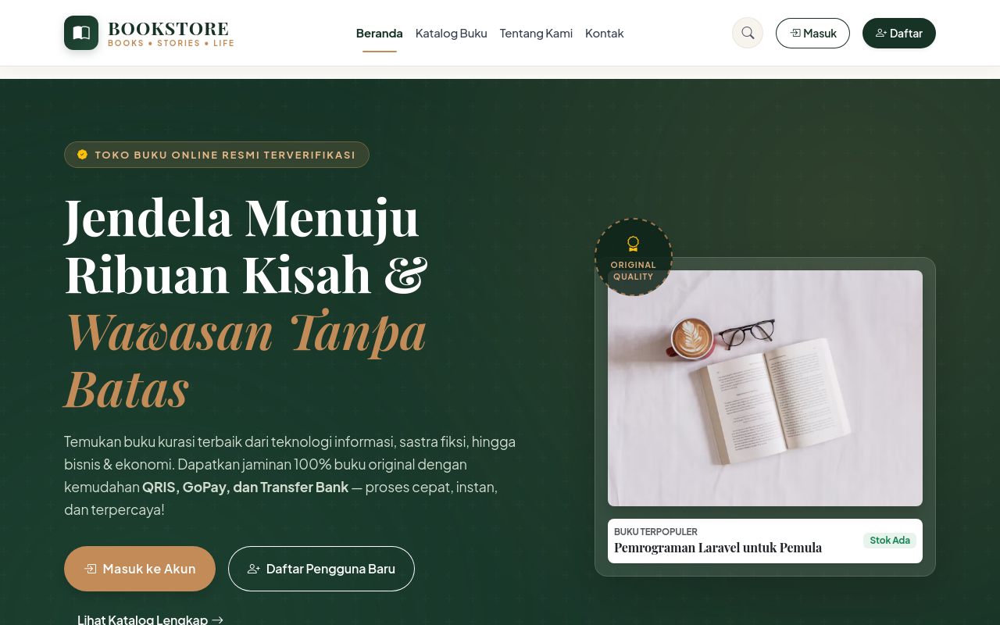
Tampilan beranda BookStore menampilkan hero banner, koleksi buku pilihan, dan kategori.
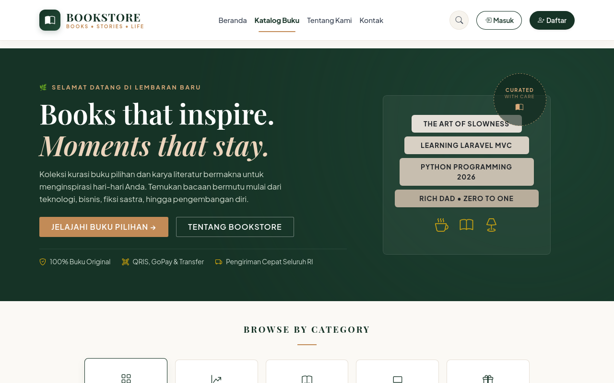
Pencarian dinamis buku berdasarkan kata kunci judul/penulis 'Laravel'.
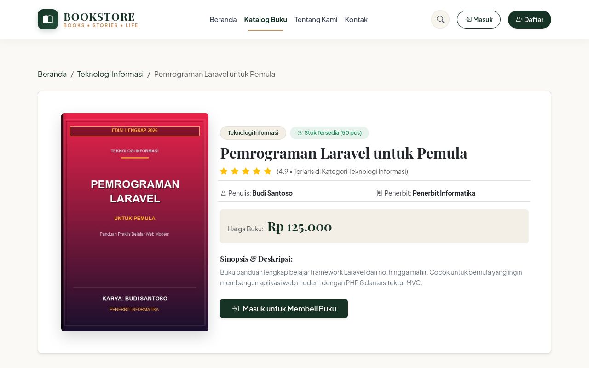
Halaman spesifikasi detail buku, informasi penerbit, harga, dan ketersediaan stok.
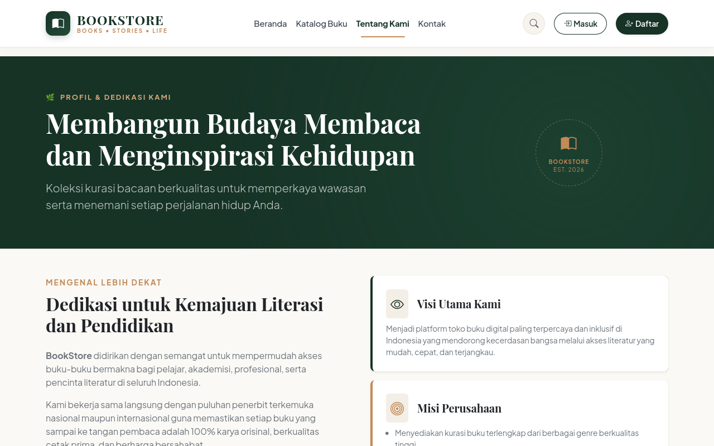
Halaman profil toko buku BookStore, visi literasi, jam operasional, dan nilai layanan.
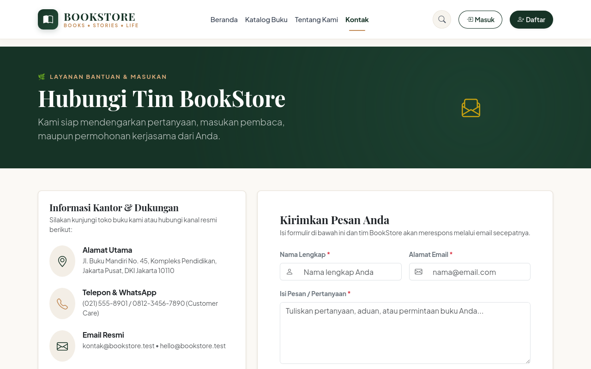
Formulir interaktif bagi pelanggan untuk mengirim pesan aduan atau pertanyaan ke admin.
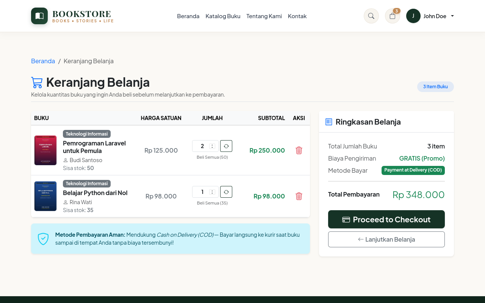
Daftar buku yang dimasukkan ke keranjang belanja, lengkap dengan validasi stok dan total belanja.
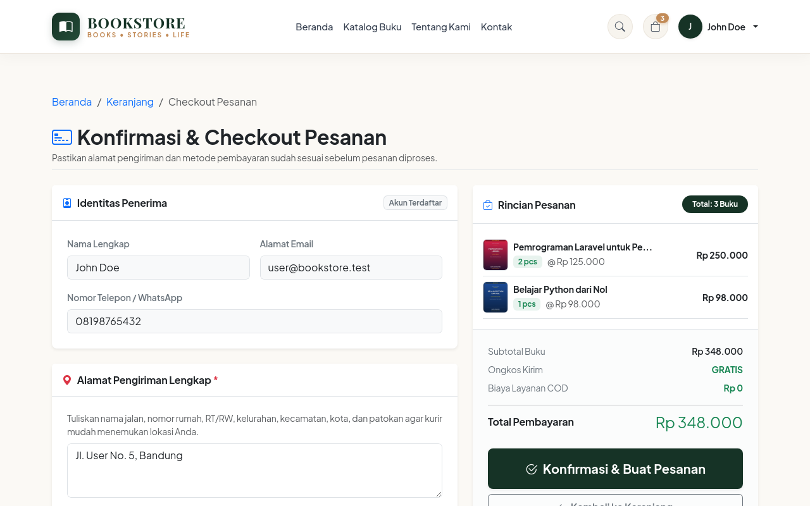
Formulir checkout dan pilihan metode pembayaran instan (QRIS, GoPay, Transfer) sebelum buku dikirim.
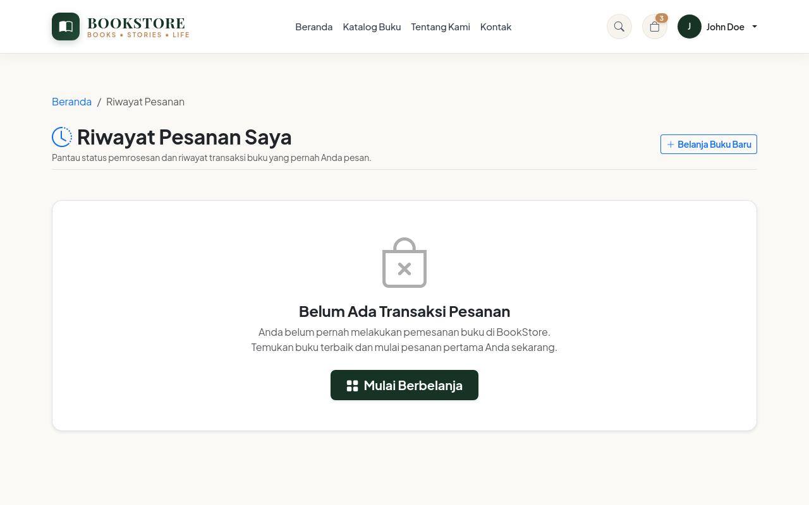
Daftar riwayat transaksi belanja pelanggan beserta status pemrosesan pesanan.
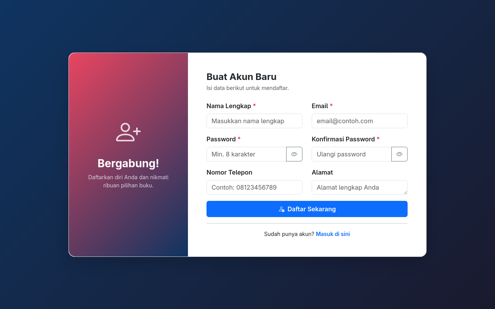
Formulir pendaftaran akun pelanggan baru dengan validasi data dan enkripsi password.
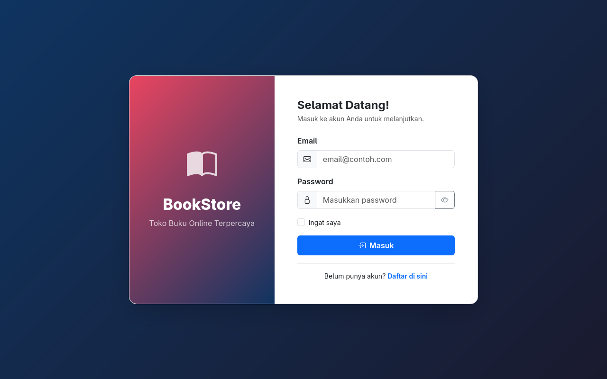
Formulir masuk akun dilengkapi tombol intip password (toggle visibility).
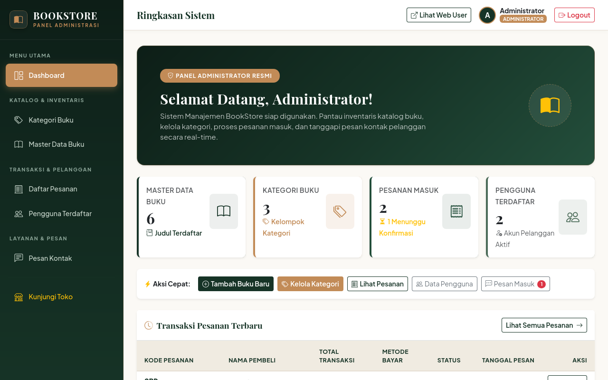
Panel monitoring admin yang menyajikan metrik buku, kategori, pelanggan, dan pesanan.
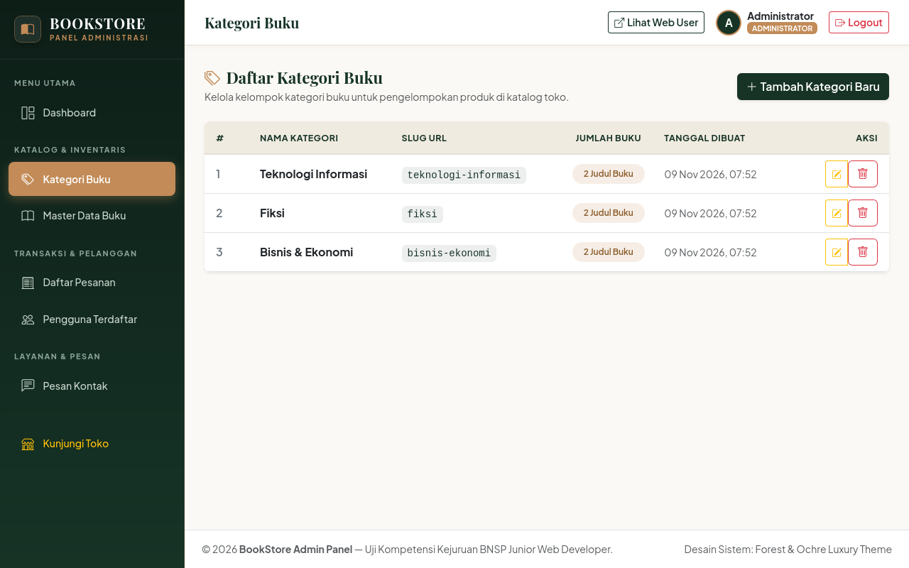
Tabel manajemen kategori buku dengan tombol tambah, edit, dan hapus kategori.
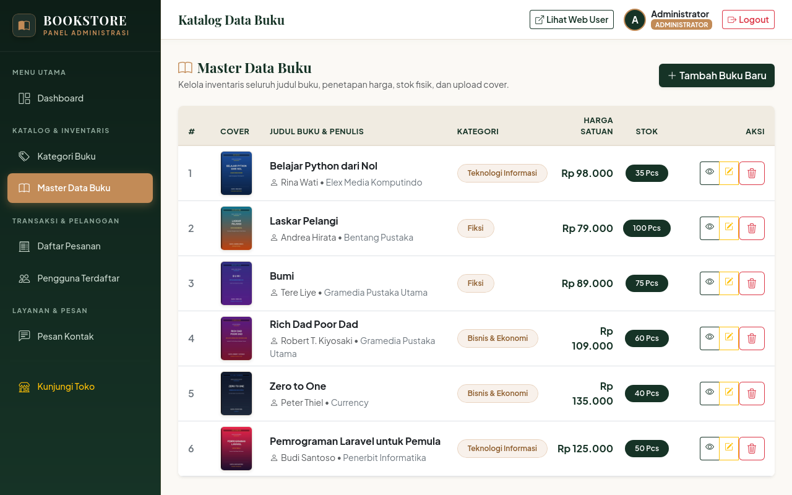
Tabel inventaris buku, upload cover gambar publik, dan pengaturan stok 1:1.
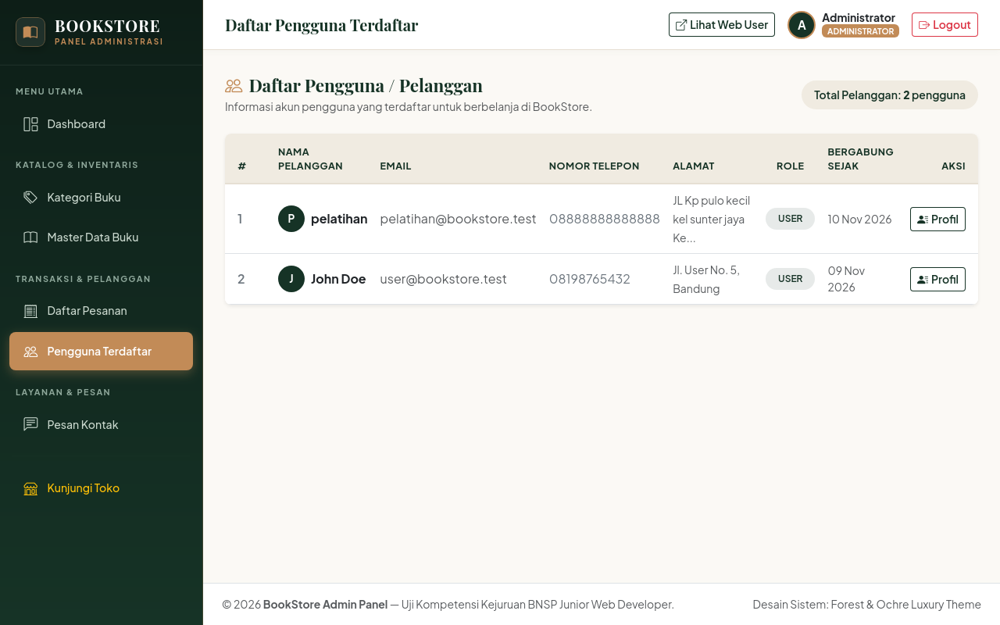
Tabel daftar seluruh pelanggan terdaftar pada rute /admin/users.
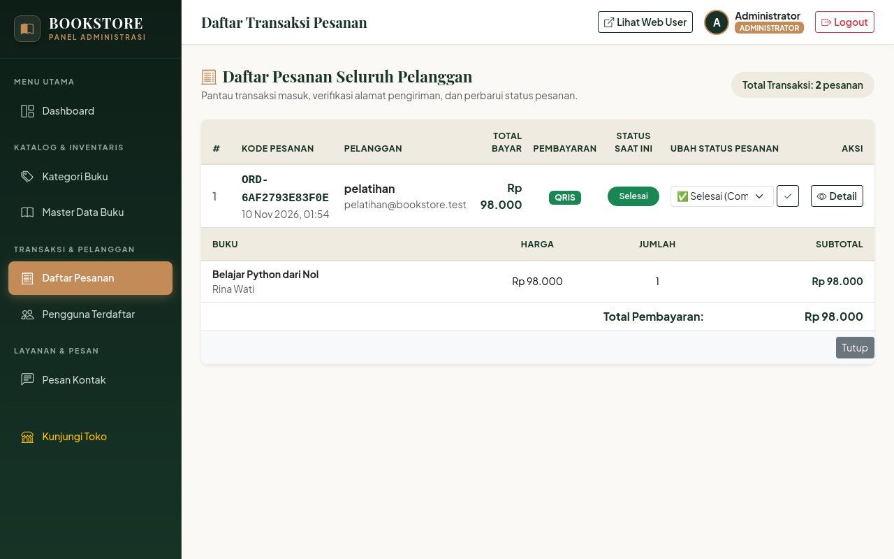
Tabel daftar pesanan dari berbagai pelanggan dan kontrol ubah status pesanan.
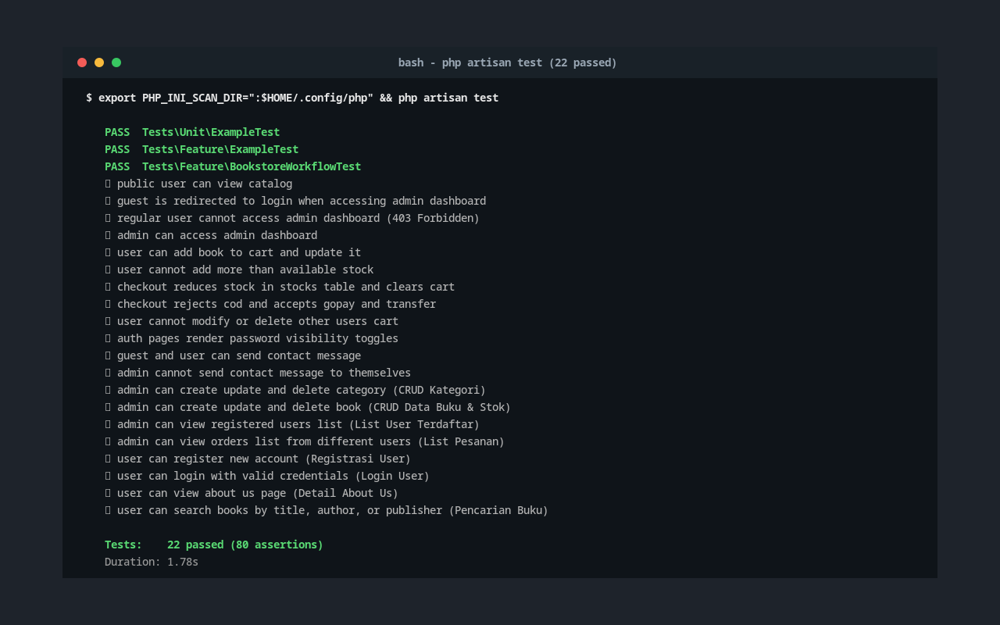
Eksekusi automated test suite (php artisan test) dengan hasil 22 lulus (80 assertions).
Aplikasi BookStore telah berhasil dibangun dan memenuhi 100% persyaratan yang ditentukan pada lembar tugas resmi FR.IA.02 (Nomor Skema: 020403). Seluruh 4 fitur utama Administrator dan 7 fitur utama User telah beroperasi sempurna, didukung arsitektur MVC yang bersih, normalisasi database relasional, komentar/DocBlocks pada setiap fungsi/program, serta pengujian otomatis dengan tingkat kelulusan 100%.